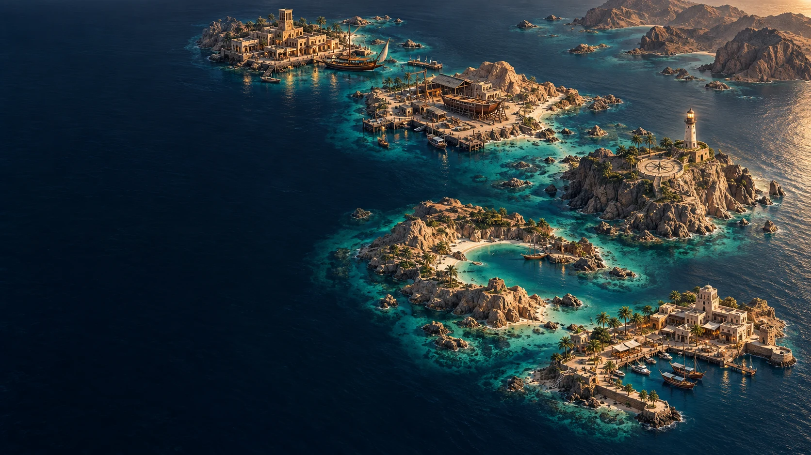
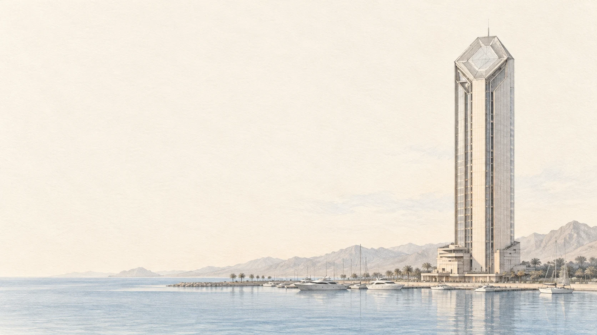
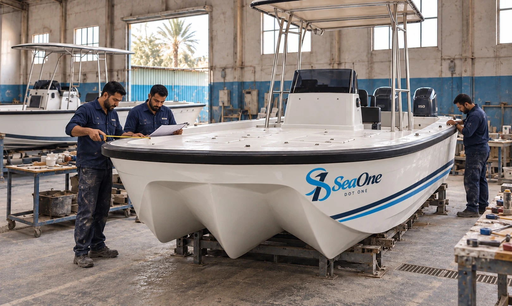
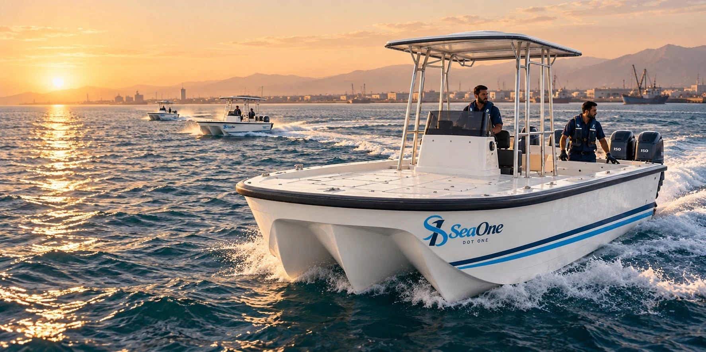
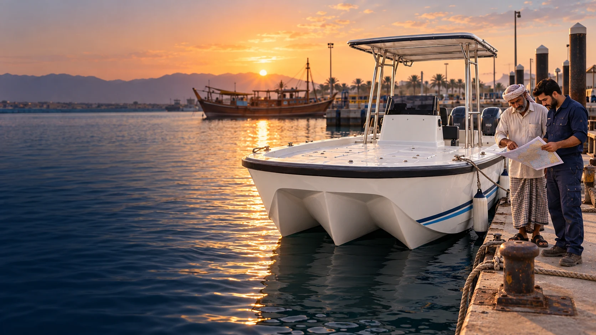
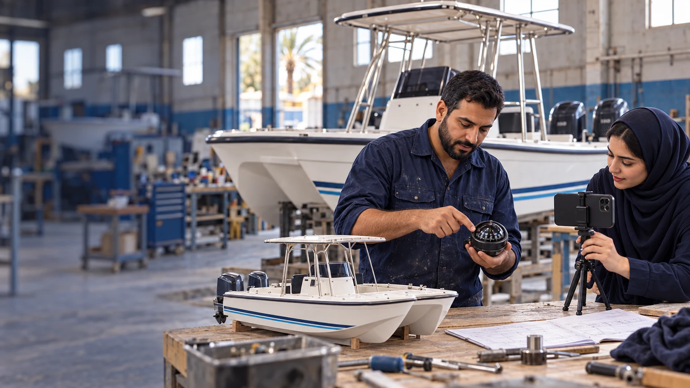

Start a mission
Heritage, building, navigation and a shared harbour. Take the helm in the existing playable voyage.
Original five-island direction. The playable voyage is an earlier prototype.




A public ambition. A future people can enter through the sea.
Explore the voyage. Learn from the waterfront.
Or bring a specific maritime need to a specialist.

Heritage, building, navigation and a shared harbour. Take the helm in the existing playable voyage.
Original five-island direction. The playable voyage is an earlier prototype.

Meet local knowledge through shore workshops, vessel stories and community experiences.
Proposed experiences. Dates and capacity are not announced.
Working on the water? Prepare a focused enquiry about your location, vessel use and next step.
Prepare a draft to share. This page does not send enquiries.
Campaign concept. Images illustrate the proposed experience. The tower is a concept study and the shipyard reveal is a visual sequence. Experiences and rewards require confirmed availability and published terms.